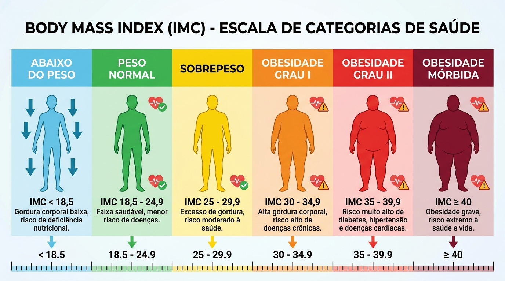

IMC, indicador de saúde
Pense no IMC como um "termômetro" inicial da sua saúde. O IMC ajuda a identificar se uma pessoa está dentro de uma faixa de peso considerada saudável, ou se está caminhando para a desnutrição ou para a obesidade.
Pense no IMC como um "termômetro" inicial da sua saúde. O IMC ajuda a identificar se uma pessoa está dentro de uma faixa de peso considerada saudável, ou se está caminhando para a desnutrição ou para a obesidade.
